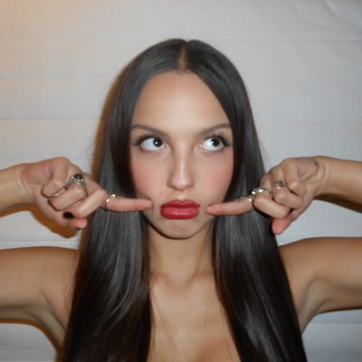

Olivia Rodrigo
Hola, soy Olivia Isabel Rodrigo, y me dedico a la actuación y a la música. Tengo 21 años y vivo en LA. Primeramente fui conocida por las series "Bizaarvardk" y "High School Musical: The Musical: The Serie" de Disney. Luego comence mi carrera en la música con el lanzamiento de mi álbum debut "Sour", para despues volver a sacar mi segundo álbum "Guts", que tuvo su deluxe con "Guts(Spilled)".